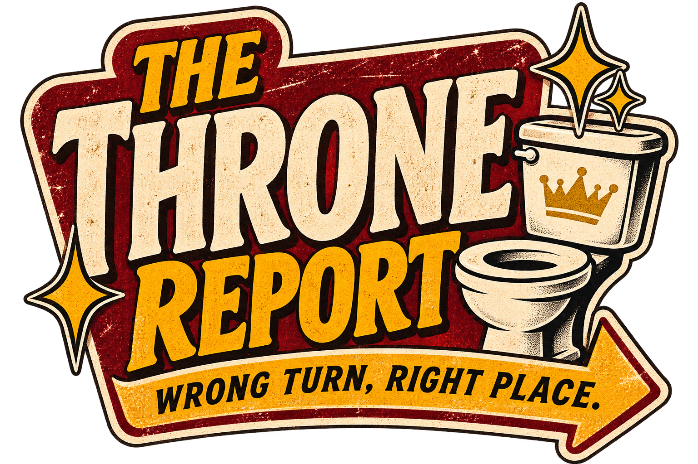

When Nature Calls, We Investigate.
Explore the ReportsWelcome to The Throne Report
Every road trip has its memorable moments. The scenic overlooks, questionable gas station snacks, unexpected detours, and that desperate search for a bathroom.
We're here to document the good, expose the questionable, and help fellow travelers avoid situations they'd rather forget.
Know Before You Go
Our three-level rating system helps you decide whether to stop or keep driving.

Featured Reports
Three stops. Three very different experiences.